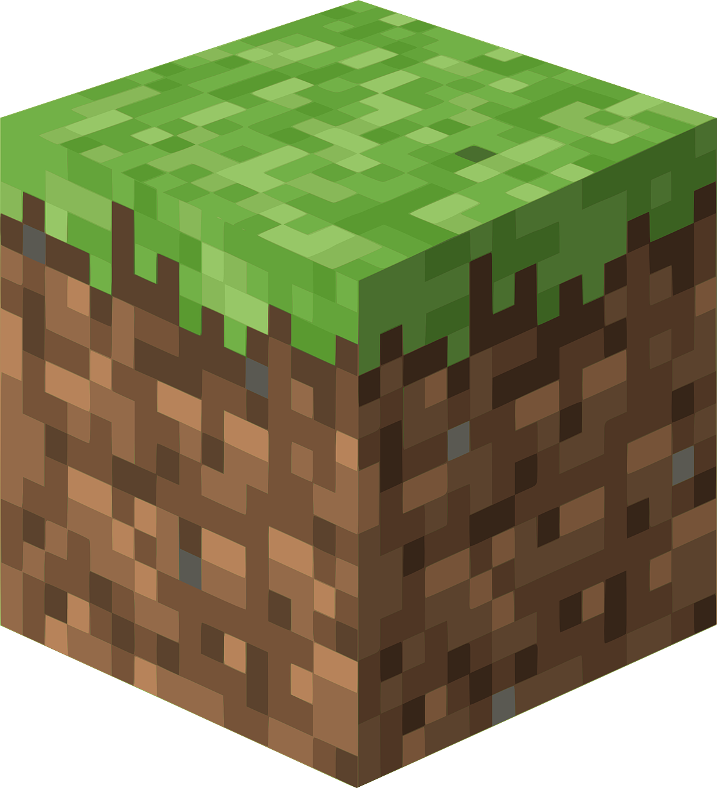

Games That Teach Science
 Kerbal Space Program
Kerbal Space Program
|
 Minecraft | Spore |
| Game Name | Release Date | Platforms | Wikipedia Page |
|---|---|---|---|
| Kerbal Space Program | April 27, 2015 | PC, PS4, Xbox One, PS5, Xbox Series X | Link |
| Minecraft | November 18, 2011 | PC (Java Version), PS3, PS4, PS5, Playstation Vita, Nintendo Switch, Xbox 360, Xbox One, Xbox Series X, Wii U | Link |
| Spore | September 5, 2008 | PC | Link |